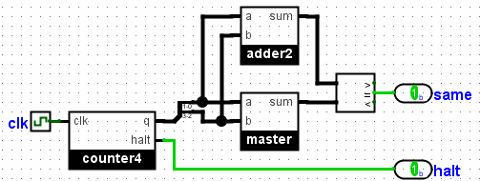

Tester de multiples fichiers
Dans l'exemple d'une classe, vous aurez un certain nombre de fichiers à tester pour leur équivalence et vous ne désirez pas parcourir le résultat de chacune des solutions prposées par les étudiants.
Construire la comparaison dans le circuit
Une approche consiste à construire un circuit de test qui effectue directement la comparaison. Ici, nous créons un circuit supplémentaire de test qui englobe le circuit à tester. Dans notre circuit global, nous incluons à la fois le sous-circuit de référence master.circ et le sous-circuit à tester situé directement dans le circuit imbriqué. Nous le connectons de manière à ce qu’il n’y ait qu’une sortie, c’est-à-dire 1 tant que les deux sous-circuits concordent.

Maintenant, nous pouvons simplement lancer Logisim en remplaçant chaque fichier de requête. Pour toute solution correcte, la seule sortie sera "1".
Utilisation de la redirection et des scripts shell
Si vous êtes assez à l'aise avec la ligne de commande, vous pouvez créer votre propre script shell pour y parvenir. Ici, nous utiliserons la redirection (l'opérateur >) pour enregistrer la sortie de chaque circuit dans un fichier. Par exemple, nous pourrions émettre les deux commandes suivantes pour collecter la sortie du circuit maître et du circuit de requête.
java -jar logisim-evolution.jar test.circ -tty table > out-master.txtjava -jar logisim-evolution.jar test.circ -tty table -sub master.circ query.circ > out-query.txt
Nous avons maintenant créé deux fichiers différents. Nous pouvons ensuite comparer les deux fichiers de sortie en utilisant un programme conçu à cet effet. Sous Linux ou MacOS X, vous souhaiterez peut-être utiliser les utilitaires de ligne de commande cmp ou diff. Sous Windows, vous souhaiterez peut-être utiliser l'utilitaire en ligne de commande fc or l'utilitaire WinMerge.
Pour traiter plusieurs fichiers de requête, vous souhaitez créer un programme simple tel qu'un script shell pour parcourir chaque fichier et comparer les résultats. Voici comment je le ferais sous Linux bash:
RUN_TEST="java -jar logisim-evolution.jar test.circ -tty table"
${RUN_TEST} > out-master.txt
for QUERY_FILE in query*.circ
do
if ${RUN_TEST} -sub master.circ ${QUERY_FILE} | cmp -s out-master.txt
then
echo "${QUERY_FILE} OK"
else
echo "${QUERY_FILE} different"
fi
done
Suite: Tester avec des vecteurs de test.